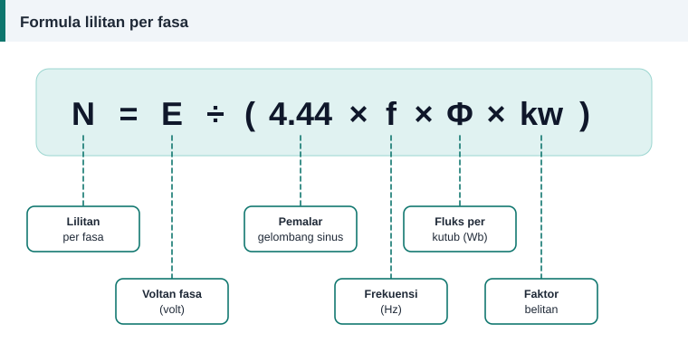

Pengiraan belitan
Formula Lilitan Per Fasa: E = 4.44 f Φ N kw Dijelaskan
Hampir setiap pengiraan belitan mesin arus ulang-alik bermula daripada satu persamaan. Persamaan itu sama untuk motor aruhan, penjana dan pengubah. Mari kita huraikan sebutannya satu demi satu, seperti di dalam kelas.


Persamaan asas
E = 4.44 × f × Φ × N × kw
Susun semula untuk mendapatkan bilangan lilitan:
N = E ÷ (4.44 × f × Φ × kw)
| Simbol | Maksud | Unit |
|---|---|---|
| E | Voltan teraruh setiap fasa (nilai punca min kuasa dua) | volt (V) |
| f | Frekuensi bekalan | hertz (Hz) |
| Φ | Fluks magnet setiap kutub | weber (Wb) |
| N | Bilangan lilitan bersiri setiap fasa | lilitan |
| kw | Faktor belitan, iaitu faktor pic × faktor agihan | tiada unit |
Dari mana datangnya 4.44
Hukum Faraday menyatakan bahawa voltan teraruh dalam satu lilitan sama dengan kadar perubahan fluks yang merangkainya. Jika fluks berubah secara sinus dengan nilai puncak Φ dan frekuensi f, voltan puncak bagi satu lilitan ialah 2π × f × Φ. Nilai punca min kuasa dua ialah nilai puncak dibahagi √2:
2π ÷ √2 = 4.443
Itulah 4.44. Ia bukan pemalar bahan atau pemalar motor. Ia hanya hasil daripada bentuk gelombang sinus.
Mengira fluks setiap kutub
Fluks ialah ketumpatan fluks purata di sela udara didarab dengan luas satu kutub:
Φ = B × (π × D ÷ P) × L
D ialah diameter dalam stator, L panjang teras dan P bilangan kutub, dengan ukuran dalam meter. B ialah ketumpatan fluks purata di sela udara dalam tesla. Buku teks reka bentuk mesin memberi julat sekitar 0.3 hingga 0.6 T untuk motor aruhan 50 Hz, dan motor kecil biasanya berada di separuh atas julat itu.
Voltan fasa, bukan voltan talian
E ialah voltan merentasi satu fasa belitan. Bagi sambungan bintang pada bekalan 400 V, E ≈ 400 ÷ √3 = 231 V. Bagi sambungan delta, E = 400 V. Voltan teraruh sebenar sedikit lebih rendah daripada voltan bekalan kerana susut voltan pada rintangan dan regangan bocor belitan, tetapi untuk anggaran lilitan kedua-duanya biasanya dianggap sama.
Contoh ringkas
Stator 24 alur, 4 kutub, D = 80 mm, L = 75 mm, bekalan 400 V 50 Hz sambungan bintang, B = 0.55 T dan kw = 0.966.
- Pic kutub = π × 0.080 ÷ 4 = 0.0628 m.
- Φ = 0.55 × 0.0628 × 0.075 = 0.00259 Wb.
- N = 231 ÷ (4.44 × 50 × 0.00259 × 0.966) ≈ 416 lilitan setiap fasa.
Langkah seterusnya, daripada lilitan per fasa kepada lilitan per gegelung, ditunjukkan dalam contoh pengiraan penuh.
Apa yang berlaku jika lilitan tersilap
- Lilitan terlalu sedikit: fluks naik, teras menjadi tepu, arus tanpa beban melonjak dan motor panas walaupun tanpa beban.
- Lilitan terlalu banyak: fluks turun dan tork maksimum berkurang, kerana tork berkadar kira-kira dengan kuasa dua fluks. Motor mudah tersekat di bawah beban.
Sebab itulah menyalin bilangan lilitan asal sentiasa menjadi pilihan pertama.
Kira tanpa kertas
Kalkulator lilitan semula menjalankan semua langkah di atas dan turut mengira faktor belitan secara automatik.
Rujukan dan bacaan lanjut
Artikel berkaitan
Faktor Agihan dan Faktor Belitan Motor Tiga Fasa
Gegelung yang diagih dalam beberapa alur menghasilkan voltan yang sedikit berbeza fasa. Faktor agihan mengukur kesannya, dan bersama faktor pic ia membentuk faktor belitan.
Contoh Pengiraan Penuh: Motor 1.1 kW, 4 Kutub, 24 Alur
Ikuti pengiraan lengkap belitan motor 1.1 kW daripada ukuran teras hingga bilangan lilitan, saiz dawai, faktor isian dan berat kuprum, sama seperti keputusan kalkulator.
Pic Kutub, Rentang Gegelung dan Faktor Pic
Rentang gegelung yang lebih pendek daripada pic kutub menjimatkan kuprum dan melicinkan gelombang voltan. Pelajari cara mengira pic kutub, rentang dan faktor pic dengan contoh.